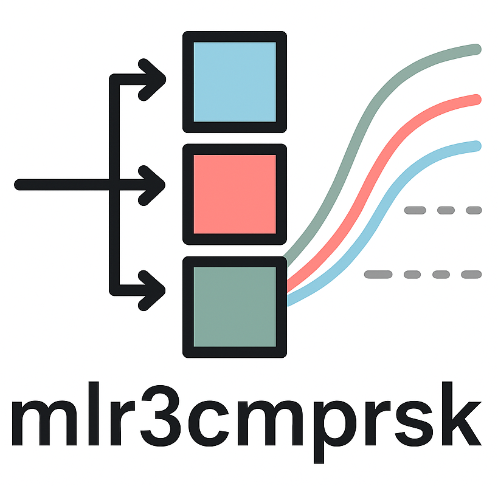

Package index
-
mlr3cmprskmlr3cmprsk-package - mlr3cmprsk: Competing Risks Machine Learning for 'mlr3'
-
TaskCompRisks - Competing Risks Task
-
LearnerCompRisks - Competing Risks Learner
-
PredictionCompRisks - Prediction Object for Competing Risks
-
MeasureCompRisks - Competing Risks Measure
-
mlr_tasks_pbc - Primary Biliary Cholangitis Competing Risks Task
-
mlr_learners_cmprsk.aalenLearnerCompRisksAalenJohansen - Aalen Johansen Competing Risks Learner
-
mlr_measures_cmprsk.aucMeasureCompRisksAUC - Blanche's AUC Competing Risks Measure
-
as_prediction_cmprsk() - Convert to a Competing Risk Prediction
-
as_task_cmprsk() - Convert to a Competing Risks Task